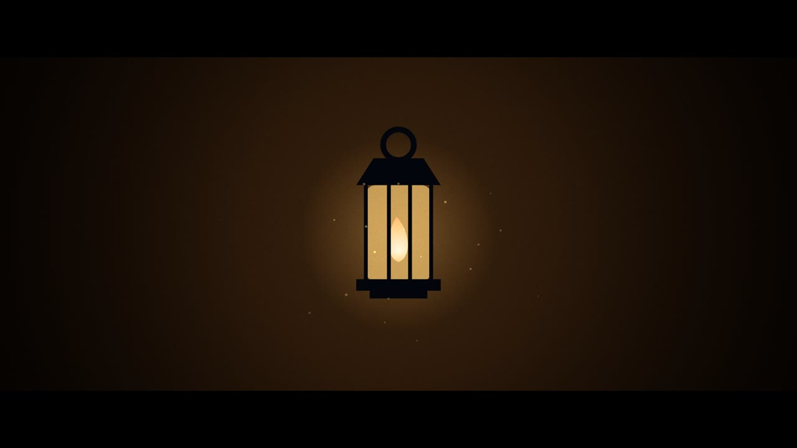
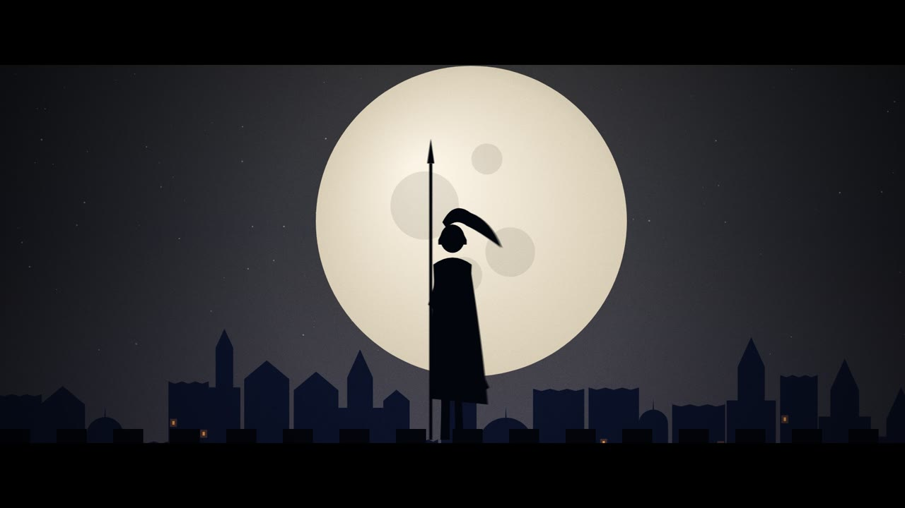

Process
Styleframes





A title sequence for an original fantasy short. An old royal guard keeps the last watch over a sleeping city the night before it falls — quiet, cinematic, and hopeful at the end.
Carry a story with motion alone: mood, pacing, a character and a turn. Flat 2D silhouettes in layered parallax, deep navy, lantern amber and paper white, with a serif title face.
Concept, design, animation, sound.
Made in code: HTML canvas, frame-by-frame render · Original score and sound design
Self-initiated brief: The Last Watch is a fictional project made for this portfolio.

